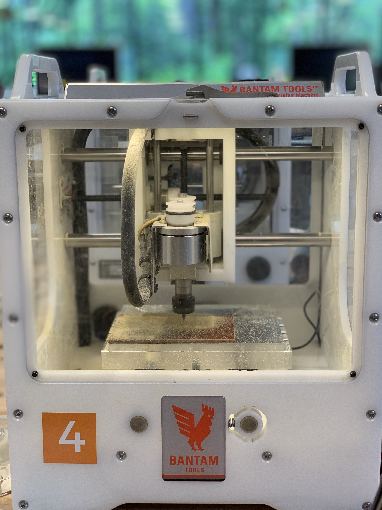
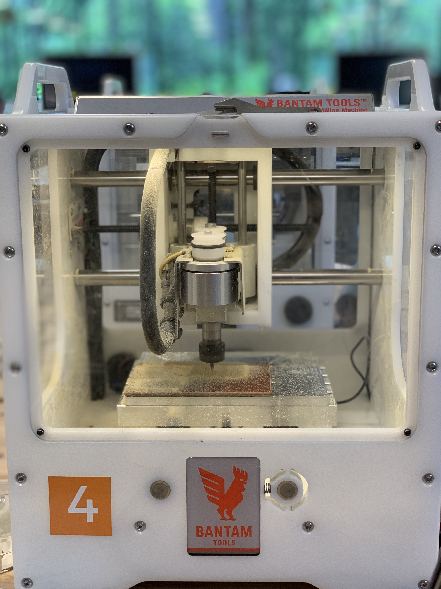

How I completed this assignment:
I used OnShape to create my pieces. I created 2 rectangles and 1 square. I did calulations based on the dimensions of my square. Once I had one rectangle done, I used that as a guide for my other retangle. I made sure that where a male part was on one retangle a female part would be on the corresponding retangle. Once both retangles were done I used them as a guide to create the square end pieces. Again keeping note to have female and male parts correspond. All of my male pieces were 0.03 inches and the female pieces are 0.31 inches. I added in the extra 0.01 on the female part so the male parts good fit in easily given the material. After creating my pieces I extruded them and went into the assembly area of OnShape. I used this feature to connect my pieces to make sure they would fit. I exported my OnShape pieces as dxg files, I used KiCad to create the Gerber file. I followed the instructions from the slide show. Once my file was done, I imported it to Bantam. I changed the setting to match the dimensions of my FR1. I then used the double sided tape to sandwich my pieces together. After this was done I used the calipers to measure the new thickness and did the calculations for the offset. After this was done I put my FR1 on the platform and let the mill do its magic.


Two words. Dog. Bones. After several unsuccessful cuts I decided to remove the dog bones from my pieces. They were being cut out too large for my pieces and not adding any value. I felt confident that based on my calculations and the way my box was set up that I wouldn't need them. The MILL also ran out of double sided tape so I had some issues with my pieces not being secure and coming off the platform as the machine went. One piece got lodged under the drill. After removing the dog bones and finding tape I could trust, I cut out two test pieces and was successful. I proceeded to cut out my remaining pieces and behold, a box.

 



Peer Help:
Lukas gave me the tip about making my female parts 0.01 inches larger.
Hannah helped me with how to use the mill.